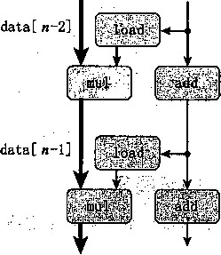

$1, %rdx %rdx, %rl2 .L498
loop:
Read product from dest Multi ply product by da.ta[i] Store product at dest Increment i Compare i:limit If >，goto loop
理解X86-64的浮点代码
我们在网络旁注ASM:SSE中讲述了 X86-64的浮点代码，它们是Intel指令集的64位版本 , 但是对于任何熟悉IA32代码的人来说，本章展示的程序示例都很容易理解。在此，我们简要回 顾X86-64及其浮点指令的相关内容。
X86-64指令集扩展了 IA32的32位寄存器，例如，用‘r’替换‘e’，将％eax、%edi 和％esp #■展到64位版本％rax、％rdi和％rsp。还增加了 8个寄存器，命名为％r8〜％rl5, 极大地增强了在寄存器中保存临时值的能力。后缀‘q’用于整数指令（例如addq、cmpq )表 明是64位操作。
浮点数据保存在一组XMM寄存器中，命名为％xmmO〜％xmml5。每个寄存器都是128位 长，能够存放4个单精度（float)或者2个双精度(double)浮点数。在初始描述中，我们只 使用对保存在SSE寄存器+的单精度值进行运算的指令。
movss指令复制一个单精度数。像各种IA32MOV指令一样，源操作数和目的操作数可以 是存储器位置，也可以是寄存器，但是它使用XMM寄存器，而不是通用寄存器。mulss指令 进行单精度数乘法，乘积存放在第二个操作数的位置。同样地，源和目的操作数在存储器位置 中，或者在XMM寄存器中。
从在这段循环代码中，我们看到，对应于指针dest的地址存放在寄存器％rbp中（这与在 IA32中不同，在IA32中，％ebp有特殊的用途，作为帧指针，它对应的64位寄存器％rbp可以 用来存放任意数据)。在第z•次迭代中，程序读出这个位置处的值，乘以data m,再将结果存 回到dest。这样的读写很浪费，因为每次迭代开始时从dest读出的值就是上次迭代最后写入 的值。
我们能够消除这样无用的存储器读写，按照图5-10中combined所示的方式重写代码。引 入一个临时变量acc,它在循环中用来累积计算出来的值。只有在循环完成之后结果才存放 在dest中。正如下面的汇编代码所示，编译器现在可以用寄存器％xmm0来保存累积值。 与 CO mbine3中的循环相比 ， 我们将每次迭代的存储器操作从两次读和一次写减少到只需要 一次读。
combine4: data_t - float. OP = *
i in %rdx ， data, in %rax, limit in %rbp, acc in XxmmO
^ . L488: loop ：
mulss (%rax,%rdx,4) , %xmmO Mu.lt.iply acc by dat.a[i]
addq $1, %rdx Increment i
cmpq %rdx, %rbp Compare 1imit : i
jg .L488 If >, goto loop
] |
/* Accumulate result in local variable 氺/ |
2 |
void combine4(vec_ptr v, data_t *dest) / |
4 |
\ long int i; |
5 |
long int length = vec_length(v); |
6 |
data_t *data = get_vec_start(v); |
7 O |
data_t acc = IDENT; |
0 9 |
for (i = 0; i < length; i++) { |
10 |
acc = acc OP data[i]; |
11 |
> |
12 13 |
♦dest = acc; } |
图5-10在临时变量中存放结果。将累积值存放在局部变量acc (累积器（accumulator)简称）中，消除 了每次循环迭代中从存储器中读出并将更新值写回的需要
我们看到程序性能有了显著的提高，如下表所示 ：
函数 |
页码 |
方法 |
整数 |
浮点数 |
|||
+ |
幸 |
+ |
F* |
D* |
|||
combine3 |
336 |
直接数据访问 |
6.01 |
8.01 |
10.01 |
11.01 |
12.02 |
combine4 |
338 |
累积在临时变量中 |
2.00 |
3.00 |
3.00 |
4.00 |
5.00 |
所有的时间至少改进了 2.4X ,整数加法情况的时间下降到了每元素两+时钟周期。
表示相对性能
表示性能改进最好的方法就是形如 Tw/r, 的比率，这里丁 ^ 是原始版本所需的时间，而 ^ 是修改过的版本所需的时间。如果发生了实际的改进，它应该是一个大于 1.0 的数字。我们 用后缀 ‘X’ 来表示这样一种比率，因子 “2.4X” 读作 “2.4 倍”。
表示相对变化的更加传统的方法是百分比，在变化 ;f 艮小时，还是艮有效的，但是它的定义十 分含糊。它应该是 100*(7； w -：r_)/T new , 逐是 100 • (7^-UT^ ， 或是别的什么呢？此外，对于 较大的变化，它就不那么有帮助了。说“性能提高了 140%” 比简单地说性能改进因子为 2.4 要 更难以理解一些。
可能又有人会认为编译器应该能够自动将图5-9中所示的 CO mbine3的代码转换为在寄存 器中累积那个值，就像图5-10中所示的combined的代码所做的那样。然而实际上，由于存储 器的别名使用，两个函数可能会有不同的行为。例如，考虑整数数据，运算为乘法，标识元素为 1的情况。设v=[2，3，5]是一个由3个元素组成的向量，考虑下面两个函数调用：
combine3(v, get_vec_start(v) + 2);
combine4(v, get_vec_start(v) +2);
也就是在向量最后一个元素和存放结果的目标之间创建一个别名。那么，这两个函数的执行 如下：
函数 |
初始值 |
循环之前 |
i = 0 |
i = 1 |
i = 2 |
最后 |
combine3 |
[2 ， 3 ， 5] |
[2,3, 1] |
[2, 3,2] |
[2, 3 ， 6] |
[2 ， 3 ， 36] |
[2, 3 ， 36] |
combine4 |
[2, 3, 5] |
[2,3,5] |
[2 ， 3 ， 5] |
[2, 3 ， 5] |
[2, 3 ， 5] |
[2, 3 ， 30] |
正如前面讲到过的，combine3将它的结果累积在目标位置，在本例中，目标位置就是向量 的最后一个元素。因此，这个值首先被设置为1,然后设为2*1=2，然后设为3*2 = 6。最后一 次迭代中，这个值会乘以它自己，得到最后结果36。对于combined的情况来说，直到最后向 量都保持不变，结束之前，最后一个元素会被设置为计算出来的值1 • 2 • 3 • 5=30。
当然，我们说明combine3和combine4之间差别的例子是人为设计的。有人会说 combined的行为更加符合函数描述的意图。不幸的是，编译器不能判断函数会在什么情况下 被调用，以及程序员的本意可能是什么。取而代之的是，在编译 C ombine3时，保守的方法是 不断地读和写存储器，即使这样做效率不太高。
_练习题5.4当用带命令行选项“-02”的GCC来编译 CO mbin e 3时，得到的代码CPE性能远好于 使用-01时的：
函数 |
页码 |
方法 |
整数 |
浮点数 |
|||
+ |
幸 |
+ |
F* |
D* |
|||
combine3 |
336 |
.用-01编译 |
6.01 |
8.01 |
10.01 |
11.01 |
12.02 |
combine3 |
336 |
用-02编译 |
3.00 |
3.00 |
3.00 |
4.02 |
5.03 |
combined |
338 |
累积在临时变量中 |
2.00 |
3.00 |
3.00 |
4.00 |
5.00 |
由此得到的性能与combine相当，不过对于整数求和的情况除外，虽然性能巳经得到了显著的提高, 但是还低于combined在检查编译器产生的汇编代码时，我们发现对内循环的一个有趣的变化：
comhi.ne3: data_t -- float, OP - *, compiled -02 i in %rdx, data in %rax, limit in %rbp, dest at %rx!2 Product in %xmmO
|
1 |
•L560: |
loop ： |
||
|
2 |
mulss |
(%rax,%rdx,4), %xmm0 |
Multipiy product |
by data.[.i] |
|
3 |
addq |
$1, %rdx |
Increment i |
|
|
4 |
cmpq |
%rdx, %rbp |
Compare limit:! |
|
|
5 |
movss |
%xmm0, (%rl2) |
Store prod act at |
dest |
|
6 |
jg |
• L560 |
If >, goto loop |
把上面的代码与用优化等级1产生的代码进行比较：
|
combine3: |
datci^t ~ float, OP ~ *, compiled ~0i |
||
|
i in %rdx, |
,data in °/ 0 rax, dest in %rbp |
||
|
1 |
.L498: |
loop: |
|
|
2 |
movss |
(%rbp), %xmm0 |
Read product from dest |
|
3 |
mulss |
(%rax,%rdx,4) , %xmm0 |
Multiply product by data[i] |
|
4 |
movss |
7 o xmm0, (%rbp) |
Store product at dest |
|
5 |
addq |
$1, %rdx |
Increment i |
|
6 |
cmpq |
%rdx, %rl2 |
Compare i :limi t |
|
7 |
jg |
.L498 |
If. >, goto loop |
我们看到，除了指令顺序有些不同，唯一的区别就是使用更多优化的版本不含有movss指令，它实现 的是从dest指定的位置读数据（第2行)。
寄存器％xmmO的角色在两个循环中有什么不同？
这个使用更多优化的版本忠实地实现了 CO mbi n e3的C语言代码吗，包括在dest和向量数据之 间有使用存储器别名的时候？
C•解释为什么这个优化保持了期望的行为，或者给出一个例子说明它产生了与使用较少优化的代码不 同的结果。
使用了这最后的变换，至此，对于每个元素的计算，都只需要2〜5个时钟周期。比起最开 始釆用优化时的11〜13个周期，这是相当大的提高了。现在我们想看看是什么因素在制约着我 们的代码的性能，以及可以如何进一步提高。
5.7 理解现代处理器
到目前为止，我们运用的优化都不依赖于目标机器的任何特性。这些优化只是简单地降低了 过程调用的开销，以及消除了一些重大的“妨碍优化的因素”，这些因素会给优化编译器造成困 难。随着试图进一步提高性能，我们必须考虑利用处理器 微体系结构的 优化，也就是处理器用来 执行指令的底层系统设计。要想获得充分提髙的性能，需要仔细地分析程序，同时代码的生成也 要针对目标处理器进行调整。尽管如此，我们还是能够运用一些基本的优化，在很大一类处理器 上产生整体的性能提髙。我们在这里公布的详细性能结果，对其他机器不一定有同样的效果，但 是操作和优化的通用原则对各种各样的机器都适用。
为了理解改进性能的方法，我们需要理解现代处理器的微体系结构。由于可以将大量的晶体 管集成到一块芯片上，现代微处理器釆用了复杂的硬件，试图使程序性能最大化。带来的一个后 果就是处理器的实际操作与通过观察机器级程序所察觉到的大相径庭。在代码级上，看上去似乎 是一次执行一条指令，每条指令都包括从寄存器或存储器取值，执行一个操作，并把结果存回到 一个寄存器或存储器位置。在实际的处理器中，是同时对多条指令求值，这个现象称为指 令级并 行。在某些设计中，可以有100条或更多条指令在处理中。釆用一些精细的机制来确保这种并行 执行的行为，正好能获得机器级程序要求的顺序语义模型的效果。现代微处理器取得的了不起的 功绩之一是：它们釆用复杂而奇异的微处理器结构，其中，多条指令可以并行地执行，同时又呈 现一种简单地顺序执行指令的表象。
虽然现代微处理器的详细设计超出了本书的范围，对这些微处理器运行的原则有一般性的了 解就足够理解它们如何实现指令级并行。我们会发现两种下界描述了程序的最大性能。当一系列 操作必须按照严格顺序执行时，就会遇到延 迟界限 （latency bound),因为在下一条指令开始之 前，这条指令必须结束。当代码中的数据相关限制了处理器利用指令级并行的能力时，延迟界 限能够限定程序性能。 呑吐量界限 （throughput bound)刻画了处理器功能单元的原始计算能力。 这个界限是程序性能的终极限制。
5.7.1整体操作
图5-11是现代微处理器的一个非常简单化的示意图。我们假想的处理器设计是不太严格 地基于Intel Core i7的处理器设计的结构，常常用它的项目代码名“Nehalem”来称呼它[99]。 Nehalem微体系结构是20世纪90年代后期以来，许多制造商生产的典型的高端处理器。在工业 界称为 超标量 （superscalar),意思是它可以在每 个时钟 周期执行多个操作，而且是 乱序的 （out- of-order),意思就是指令执行的顺序不一定要与它们在机器级程序中的顺序一致。整个设计有两 个主要部分： 指令控制单元 （Instruction Control Unit, ICU)和执 行单元 （Execution Unit, EU) 0 前者负责从存储器中读出指令序列 ， 并根据这些指令序列生成一组针对程序数据的基本操作；而 后者执行这些操作。和第4章研究过的按序（in-order)流水线相比，乱序处理器需要更大更复 杂的硬件，但是它们能更好地达到更高的指令级并行度。
ICU从 指令高速缓存 （instruction cache)中读取指令。指令高速缓存是一个特殊的高速缓存 存储器，它包含最近访问的指令。通常，ICU会在当前正在执行的指令很早之前取指，这样它 才有足够的时间对指令译码 ， 并把操作发送到EU。不过，一个问题是当程序遇到分支 0 时，程
㊀术语“分支”专指条件转移指令。对处理器来说，其他将控制传送到多个目的地址的指令，例如过程返回和间 接跳转，带来的也是类似的挑战。
序有两个可能的前进方向。一种可能会选择分支，控制被传递到分支目标。另一种可能是，不 选择分支，控制被传递到指令序列的下一条指令。现代处理器釆用了一种称为分支预测（branch prediction)的技术，处理器会猜测是否会选择分支，同时还预测分支的目标地址。使用投机执 行（speculative execution)的技术，处理器会开始取出位于它预测的分支会跳到的地方的指令, 并对指令译码，甚至在它确定分支预测是否正确之前就开始执行这些操作。如果过后确定分支预 测错误，会将状态重新设置到分支点的状态，并开始取出和执行另一个方向上的指令。标号为取 指控制的块包括分支预测，以完成确定取哪些指令的任务。
指令控制
指制
取控
地址
mm
0
指令
预测 0K?
寄存器
更新
|
地址 |
数据 |
地址 |
数据 |
|||
!!妒蝴 1 .i ‘ - ^ :
能元
功单
操作结果
图5-11 —个现代处理器的框图。指令控制单元负责从存储器中读出指令，并产生一系列基本操作。然后 执行单元完成这些操作，以及指出分支预测是否正确
指令译码逻辑接收实际的程序指令，并将它们转换成一组基本操作（有时称为微操作）。每 个这样的操作都完成某个简单的计算任务，例如两个数相加，从存储器中读数据，或是向存储器 写数据。对于具有复杂指令的机器，比如x86处理器，一条指令可以被译码成可变数量的操作。 关于指令如何被译码成更多的基本操作序列的细节，不同的机器都会不同，这个信息可谓是高度 机密。幸运的是，不需要知道某台机器实现的底层细节，我们也能优化我们的程序。
在一个典型的x86实现中，一条只对寄存器操作的指令，例如
addl %eax, %edx
会被转化成一个操作。另一方面，一条包括一个或者多个存储器引用的指令，例如
addl %eax f 4(%edx)
会产生多个操作，把存储器引用和算术运算分开。我们这里给出的这条指令会被译码成为三个操
作：一个操作从存储器 中加载 一个值到处理器中，一个操作将加载进来的值加上寄存器％eax中 的值，而一个操作将结果存回到存储器。这种译码逻辑分解指令，允许任务在一组专门的硬件单 元之间进行分割。然后，这些单元可以并行地执行多条指令的各个部分。
EU接收来自取指单元的操作。通常，每个时钟周期会接收若干个操作。这些操作会被分派 到一组 功能单元中， 它们会执行实际的操作。这些功能单元是专门用来处理特定类型的操作。基 于Intel Core i7的功能单元，图5-11说明了一组典型的功能单元。我们可以看到，有三个功能单 元专门用来计算，而剩下的两个是用来读（加载）和写（存储）存储器。每个计算单元可以执行 多个不同的操作：所有的单元都至少可以执行基本整数运算，例如加法和位级逻辑运算。浮点运 算和整数乘法需要更复杂的硬件，所以只能由特殊的功能单元处理。
读写存储器是由加载和存储单元实现的。加载单元处理从存储器读数据到处理器的操作。 这个单元有一个加法器来完成地址计算。类似的，存储单元处理从处理器写数据到存储器的操 作。它也有一个加法器来完成地址计算。如图中所示，加载和存储单元通过 数据高速缓存 （data cache)来访问存俾器。数据高速缓存是一个高速存储器，存放着最近访问的数据值。
使用投机执行技术对操作求值，但是最终结果不会存放在程序寄存器或数据存储器中，直到 处理器能确定应该实际执行这些指令。分支操作被送到EU,不是确定分支该往哪里去，而是确 定分支预测是否正确。如果预测错误，EU会丢弃分支点之后计算出来的结果。它还会发信号给 分支单元，说预测是错误的，并指出正确的分支目的。在这种情况中，分支单元开始在新的位置 取指。如3.6.6节中看到的，这样的 预测错 误会导致很大的性能开销。在可以取出新指令、译码 和发送到执行单元之前，要花费一点时间。
在ICU中， 退役单元 （retirement unit)记录正在进行的处理 ， 并确保它遵守机器级程序的 顺序语义。我们的图中展示了一 个寄存器文件 （registerfile),它包含整数、浮点数和最近的SSE 寄存器，是退役单元的一部分，因为退役单元控制这些寄存器的更新。指令译码时，关于指令 的信息被放置在一个先进先出的队列中。这个信息会一直保持在队列中，直到发生两个结果中的 一个。首先，一旦指令的操作完成了，而且所有导致这条指令的分支点也都被确认为预测正确 ， 那么这条指令就可 以退役 （retired) 了，所有对程序寄存器的更新都可以被实际执行了。另一方 面，如果导致该指令的某个分支点预测错误，这条指令会 被清空 （flushed)，丢弃所有计算出来 的结果。通过这种方法 ， 预测错误就不会改变程序的状态了。■
正如我们已经描述的那样，任何对程序状态的更新都只会在指令退役时才会发生，只有在处 理器能够确信导致这条指令的所有分支都预测正确了，才会这 样做。 为了加速一条指令到另一条 指令的结果的传送，许多此类信息是在执行单元之间交换的，即图中的“操作结果”。如图中的 箭头所示，执行单元可以直接将结果发送给彼此。这是4.5.7节中简单处理器设计中釆用的数据 转发技术的更复杂精细版本。
控制操作数在执行单元间传送的最常见的机制称为 寄存器重命名 (register renaming) 0 当一 条更新寄存器r的指令译码时，产生标记/,得到一个指向该操作结果的唯一标识符。条目（r, t) 被加入到一张表中，该表维护着每个程序寄存器r与会更新该寄存器的操作的标记 t 之间的关 联。当随后以寄存器r作为操作数的指令译码时，发送到执行单元的操作会包含 〖 作为操作数源 的值。当某个执行单元完成第一个操作时，会生成一个结果(v, 0，指明标记为/的操作产生值 V 。 所有等待/作为源的操作都能使用 v 作为源值，这就是一种形式的数据转发。通过这种机制 ， 值可以直接从一个操作直接转发到另一个操作，而不是写到寄存器文件再读出来，使得第二个操 作能够在第一个操作完成后尽快开始。重命名表只包含关于有未进行写操作的寄存器条目。当一 条被译码的指令需要寄存器r,而又没有标记与这个寄存器相关联 ， 那么这个操作数可以直接从 寄存器文件中获取。有了寄存器重命名，即使只有在处理器确定了分支结果之后才能更新寄存 器，也可以预测着执行操作的整个序列。
乱序处理的历史
乱序处理最早是在1964年Control Data Corporation的6600处理器中实现的。指令由十个不 同的功能单元处理，每个单元都能独立地运行。在那个时候，这种时钟频率为lOMhz的机器被 认为是科学计算最好的机器。
在1966年，IBM首先是在IBM 360/91上实现了乱序处理，但只是用来执行浮点指令。在大 约25年的时间里，乱序处理都被认为是一项异乎寻常的技术，只在追求尽可能高性能的机器中 使用，直到1990年IBM在RS/6000系列工作站中重新引入了这项技术。这种设计成为了 IBM/ Motorola PowerPC系列的基础，1993年引入的型号601，它成为第一个使用乱序处理的单芯片微 处理器。Intel在1995年的PentiumPro型号中引入了乱序处理，PentiumPro的底层微体系结构类 似于Core i7的。
功能单元的性能
图5-12提供了 Intel Core i7的一些算术运算的性能，有的是测量出来的，有的是引用Intel 的文献[26]。这些时间对于其他处理器来说也是具有代表性的。每个运算都是由两个周期计数值 来刻画的：一个是延迟（latency),它表示完成运算所需要的总时间；另一个是发射时间（issue time),它表示两个连续的同类型运算之间需要的最小时钟周期数。
运算 |
整数 |
单精度 |
双精度 |
|||
延迟 |
发射 |
延迟 |
发射 |
延迟 |
发射 |
|
加法 |
1 |
0.33 |
3 |
1 |
3 |
1 |
乘法 |
3 |
1 |
4 |
1 |
5 |
1 |
除法 |
11-21 |
5〜13 |
10 〜15 |
6-11 |
10 〜23 |
6-19 |
图5-12 Intel Core i7的算术运算的延迟和发射时间特性。延迟表明执行实际运算所需要的时钟周期总数, 而发射时间表明两次运算之间间隔的最小的周期数。除法需要的时间依赖于数据值
我们看到，随着字长的增加（例如从单精度到双精度)，对于更复杂的数据类型（例如从整 数到浮点数)，对于更复杂的运算（例如从加法到乘法)，延迟也会增加。
我们还可以看到大多数形式的加法和乘法运算的发射时间为1,意思是说在每个时钟周期， 处理器都可以开始一条新的这样的运算。这种很短的发射时间是通过使用流水线实现的。流水线 化的功能单元实现为一系列的阶段(stage),每个阶段完成一部分的运算。例如，一个典型的浮 点加法器包含三个阶段（所以有三个周期的延迟）：一个阶段处理指数值，一个阶段将小数相加， 而另一个阶段对结果进行舍入。算术运算可以连续地通过各个阶段，而不用等待一个操作完成后 再开始下一个。只有当要执行的运算是连续的、逻辑上独立的时候，才能利用这种功能。发射时 间为1的功能单元被称为完全流水线化的（fUlly pipelined)：每个时钟周期可以开始一个新的运 算。整数加法的发射时间为0.33,这是因为硬件有三个完全流水线化的能够执行整数加法的功能 单元。处理器有能力每个时钟周期执行三个加法。我们还看到，除法器（用于整数和浮点除法, 还用来计算浮点平方根）不是完全流水线化的——它的发射时间只比它的延迟少几个周期。这就 意味着在开始一条新运算之前，除法器必须完成除法中除了最后几步之外的所有步骤。我们还看 到，对于除法的延迟和发射时间是以范围的形式给出的，因为某些被除数和除数的组合比其他的 组合需要更多的步骤。除法的长延迟和长发射时间使之成为了一个相对开销很大的运算。
表达发射时间的一种更常见的方法是指明这个功能单元的最大呑吐量，定义为发射时间的倒 数。一个完全流水线化的功能单元有最大的吞吐量，每个时钟周期一个运算，而发射时间较大的
功能单元的最大吞吐量比较小。
电路设计者可以创建具有广泛性能特性的功能单元。创建一个延迟短或使用流水线的单元需 要较多的硬件，特别是对于像乘法和浮点操作这样比较复杂的功能。因为微处理器芯片上，对于 这些单元，只有有限的空间，所以CPU设计者必须小心地平衡功能单元的数量和它们各自的性 能，以获得最优的整体性能。设计者们评估许多不同的基准程序，将大多数资源用于最关键的操 作。如图5-12表明的那样，在Core i7的设计中，整数乘法、浮点乘法和加法被认为是重要的操 作，即使为了获得低延迟和较高的流水线化程度需要大量的硬件。另一方面，除法相对不太常 用，而且要想实现低延迟或完全流水线化是很困难的。
这些算术运算的延迟和发射时间（或者等价地，最大吞吐量）会影响合并函数的性能。我们 用CPE值的两个基本界限来表示这种影响：
+
整数
浮点数
+
延迟
吞吐量
3.00
1.00
4.00
1.00
1.00
1.00
3.00
1.00
5.00
1.00
延迟界 限给出了任何必须按照严格顺序完成合并运算的函数所需要的最小CPE值。根据功 能单元产生结果的最大速率 ， 呑吐量界限 给出了 CPE的最小界限。例如，因为只有一个乘法器 , 它的发射时间为1个时钟周期，处理器不可能支持每个时钟周期大于一条乘法的速度。我们在前 面就注意到，处理器有三个能够进行整数加法的功能单元，所以整数加法的发射时间为0.33。不 幸的是，因为需要从存储器读数据，这造成了合并函数CPE为1.00的另一个吞吐量界限。我们 会展示延迟界限和吞吐量界限对合并函数不同版本的影响。
5.7.3处理器操作的抽象模型
我们会使用程序的 敖据流 （data-flow)表示，作为分析在现代处理器上执行的机器级程序性 能的一个工具，这是一种图形化的表示方法，展现了不同操作之间的数据相关是如何限制它们的 执行顺序的。这种限制形成了图中的关 键路径 （critical path),这是执行一组机器指令所需时钟 周期数的一个下界。
在继续技术细节之前，检査一下对函数combine4所获得的CPE测量值是很有帮助的，到 目前为止combine4是最快的代码: ，
函数 |
页码 |
方法 |
整数 |
浮点数 |
|||
+ • * |
+ |
P* |
D* |
||||
combined |
338 |
累积在临时变董中 |
2.00 |
3.00 |
3.00 |
4.00 |
5.00 |
延迟界限 |
1.00 |
3.00 |
3.00 |
4.00 |
5.00 |
||
吞吐量界限 |
• |
1.00 |
1.00 |
1.00 |
1.00 |
1.00 |
|
我们可以看到,除了整数加法的情况，这些测量值与处理器的延迟界限是一样的。这不是巧 合~它表明这些函数的性能是由所执行的求和或者乘积计算主宰的。计算 n 个元素的乘积或者 和需要大约 ^+尤个时钟 周期，这里1是合并运算的延迟，而[表示调用函数和初始化以及终 止循环的开销。因此，CPE就等于延迟界限I。
从机器级代码到数据流图 程序的数据流表示是非;E式的。我们只是想用它来形象地描述程序中的数据相关是如何主宰 程序的性能的。以combine 4 (图5-10)为例来描述数据流表示,法。我们将注意力集中在循环 执行的计算上,因为对于大向量来说，这是决定性能的主要因素。我们考虑浮点数据、以乘法作
为合并运算的情况，不过其他数据类型和运算的组合也有几乎一样的结构。这个循环编译出的代 码由四条指令组成，寄存器％rdx存放循环索引i, % rax存放数组地址data, %rcx存放循环 界限limit,而％xmmO存放累积值acc 0
combine4: data„„t = float f OP ~ *
in %rdx, data, in %rax t limit in %rbp, acc in ZxmmG
.L488:
mulss
addq
cmpq
jg
(%rax,%rdx,4), %xmmO $1, %rdx %rdx, %rbp • L488 loop:
Multiply acc by data[i] Increment i Contpare limit :i If >, goto loop
如图5-13所示，在我们假想的处理器设计中，指令译码器会把这四条指令扩展成为一系列 的五步操作，最开始的乘法指令被扩展成一个load操作，从存储器读出源操作数，和一个mul 操作，执行乘法。
mulss (%rax,%rdx,4), %xmmO
addq $l,%rdx cmpq %rdx,%rbp jg loop
图5-13 combine内循环代码的图形化表示。指令被动态地翻译成一个或者两个操作，每个操作从其他 操作或寄存器接收值，并且为其他操作和寄存器产生值。我们给出最后一条指令的目标为标号loop。 它跳转到给出的第一条指令
作为生成程序数据流图表示的一步,图5-13左边的方框和线给出了各个指令是如何使用和 更新寄存器的，顶部的方框表示循环开始时寄存器的值，而底部的方框表示的是最后寄存器的 值。例如，寄存器％rax只被load操作在执行地址计算时作为源值，因此这个寄存器在循环结 束时有着同循环开始时一样的值。类似地，寄存器％rb P 只被cmp操作使用。另一方面，在循 环中，寄存器％rdx既被使用也被修改。它的初始值被load和add操作使用；它的新值是由 add操作产生的，然后被cmp操作使用。在循环中，mul操作首先使用寄存器％xmmO的初始值 作为源值，然后会修改它的值。
图5-13中的某些操作产生的值不对应于任何寄存器。在右边，用操作间的弧线来表示。 load操作从存储器读出一个值，然后把它直接传递到mul操作。由于这两个操作是通过对一条 nmlss指令译码产生的，所以这个在两个操作之间传递的中间值没有与之相关联的寄存器。cmp 操作更新条件码，然后jg操作会测试这些条件码。
对于形成循环的代码片段，我们可以将访问到的寄存器分为四类：
只读：这些寄存器只用作源值，可以作为数据，也可以用来计算存储器地址，但是在循环中 它们是不会被修改的。循环combined的只读寄存器是％rax和％rbp。
只写：这些寄存器作为数据传送操作的目的。在本循环中没有这样的寄存器。
局部：这些寄存器在循环内部被修改和使用，迭代与迭代之间不相关。在这个循环中，条件
码寄存器就是例子：cmp操作会修改它们，然后jg操作会使用它们，不过这种相关是在单次迭 代之内的。
循环：对于循环来说，这些寄存器既作为源值，又作为目的，一次迭代中产生的值会在另 一次迭代中用到。可以看到，％rdx和％xmmO是combine4的循环寄存器，对应于程序值i和 acco
正如我们会看到的，循环寄存器之间的操作链决定了限制性能的数据相关。
图5-14是对图5-13的图形化表示的进一步改进，目标是只给出影响程序执行时间的操作和 数据相关。在图5-14a中看到，我们重新排列了操作符，更清晰地表明了从顶部源寄存器（只读 寄存器和循环寄存器）到底部目的寄存器（只写寄存器和循环寄存器）的数据流。
a) b)
图5-14将combined的操作抽象成数据流图：a)重新排列了图5-13的操作符，更清晰地表明了数据相 关；b)操作在一次迭代中使用某些值，产生出在下一次迭代中需要的新值
在图5-14a中，如果操作符不属于某个循环寄存器之间的相关链，那么就把它们标识成白 色。例如，比较（cmp)和分支（jg)操作不直接影响程序中的数据流。假设指令控制单元预测 会选择分支，因此程序会继续循环。比较和分支操作的目的是测试分支条件，如果不选择分支的 话，就通知ICU。我们假设这个检查能够完成得足够快，不会减慢处理器的执行。
在图5-14b中，消除了左边标识为白色的操作符，只保留了循环寄存器。剩下的是一个抽 象的模板，表明的是由于循环的一次迭代在循环寄存器中形成的数据相关。在这个图中可以看 到,从一次迭代到下一次迭代有两个数据相关。在一边，我们看到存储在寄存器％7皿110中的程 序值acc的连续的值之间有相关。通过将acc的旧值乘以一个数据元素，循环计算出acc的新 值，这个数据元素是由load操作产生的。在另一边，我们看到循环索引i的连续的值之间有相 关。每次迭代中，i的旧值用来计算load操作的地址，然后add操作也会增加它的值，计算出 新值。
图5-15给出了函数combined内循环《次迭代的数据流表示。可以看出，简单地重复图
5-14右边的模板《次，就能得到这张图。我们可以看到，程序有两条数据相关链，分别对应于 操作mul和add对程序值acc和i的修改。假设单精度乘法延迟为4个周期，而整数加法延迟 为1个周期，可以看到左边的链会成为关键路径，需要4«个周期执行。右边的链只需要《个周 期执行，因此，它不会制约程序的性能。
图5-15说明执行单精度浮点乘法时，对于combined为什么我们获得了等于4个周期延 迟界限的CPE。当执行这个函数时，浮点乘法器成为了制约来源。循环中需要的其他操作——
控制和测试循环变量i,计算下一个数据元素的地址，以及从存储器中读数据 地进行。每次后继的acc的值被计算出来，它就反馈回来计 算下一个值，不过只有等到四个周期后才能完成。
data[0]
关键路径
其他数据类型和运算组合的数据流与图5-15所示的内容 一样，只是在左边的形成数据相关链的数据操作不同。对于 所有情况，如果运算的延迟L大于1,那么可以看到测量出 来的CPE就是I,表明这个链是限制性能的关键路径。
data[l]
2 .其他性能因素

combined内循环 n 次迭 代计算的数据流表示。乘 法操作的序列形成了限制 程序性能的关键路径
—
另一方面，对于整数加法的情况，我们对combing的 测试表明CPE为2.00，而根据沿着图5-15中左边和右边形成 的相关链预测的CPE为1.00，测试值比预测值要慢。这说明 了一个原则，那就是数据流表示中的关键路径提供的只是程 序需要周期数的 下界。 还有其他一些因素会限制性能，包括 可用的功能单元的数量和任何一步中功能单元之间能够传递 数据值的数量。对于合并运算为整数加法的情况，数据操作 足够快，使得其他操作供应数据的速度不够快。要准确地确 定为什么程序中每个元素需要2.00个周期，需要比公开可以 获得的更详细得多的硬件设计知识。
图 5-15
总结一下combined的性能分析：我们对程序操作的抽 象数据流表示，说明combine4的关键路径长是由对 程序值acc的连续更新造成的，这条路径将CPE限制为最多 Lo 除了整数加法之外，对于所有的其他情况，测量出的CPE 确实等于厶对于整数加法，测量出的CPE为2.00而不是根 据关键路径的长度所期望的1.00。
看上去，延迟界限是基本的限制，限制了合并运算能执 行的速度。接下来的任务是重新调整操作的结构，增强指令 级并行性。我们想对程序做变换，使得唯一的限制变成吞吐 量界限 ， 得到接近于1.00的CPE。
_练习题5.5假设写一个对多项式求值的函数，这里，多项式
的次数为系数为..., a„ 0 对于值;c,我们对多项式求值，计算
(5-2)
a 0 +a x x+a2x 2 + • • •
这个求值可以用下面的函数来实现，参数包括一个系数数组a、值x和多项式的次数degree (等式 (5-2)中的值《)。在这个函数的一个循环中，我们计算连续的等式的项，以及连续的;c的幂：
double poly(double a[], double x, int degree)
long int i;
double result = a[0];
double xpwr = x; /* Equals x"i at start of loop 氺 / for (i = 1; i <= degree; i++) { result += a[i] * xpwr; xpwr = x * xpwr;
>
10
return result;
对于次数这段代码执行多少次加法和多少次乘法运算？
在我们的参考机上，算术运算的延迟如图5-12所示，测量这个函数的CPE等于5.00。根据由于实 现函数第7〜8行的操作，迭代之间形成的数据相关，解释为什么会得到这样的CPE。
_练习题5.6我们继续探索练习题5.5中猫述的多项式求值的方法。通过釆用Horner法，一种以英国 数学家William G.Homer (1786—1837)命名的方法，对多项式求值，我们可以减少乘法的数量。其思 想是反复提出X的幂，得到下面的求值：
00+^:(4+^:(^12+……)） (5-3)
使用Horner法，可以用下面的代码实现多项式求值：
/* Apply Horner's method 木 /
double polyh(double a[], double x, int degree)
{
long int i;
double result = a[degree];
for (i = degree-1; i >= 0; i—)
result = a[i] + x*result;
return result; ,'
>
对于次数这段代码执行多少次加法和多少次乘法运算？
在我们的参考机上，算术运算的延迟如图5-12所示，测量这个函数的CPE等于8.00。根据由于实 现函数第7行的操作，迭代之间形成的数据相关，解释为什么会得到这样的CPE。
请解释虽然练习题5.5中所示的函数需要更多的操作，但是它是如何运行得更快的。
5.8 循环展开
循环展开i一种程序变换，通过增加每次迭代计算的元素的数量，减少循的迭代次数。 P sum2函数（见图5-1)就是这样一个例子，其中每次迭代计算前置和的两个元素，因而将需要 的迭代次数减半。循环展开能够从两个方面改程序的性能。首先，它减少了不直接有助于程序结 果的操作的数量，例如循环索引计算和条件分支。其次，它提供了一些方法，可以进一步变化代 码，减少整个计算中关键路径上的操作数量。在本节中，我们会看一些简单的循环展开，不做任 何进一步的变化。
图5-16是合并代码的使用两次循环展开的版本。第一个循环每次处理数组的两个元素。也 就是每次迭代 ， 循环索引i加2,在一次迭代中 ， 对数组元素i和i+1使用合并运算
一般来说，向量长度不一定是2的倍数。想要使我们的代码对任意向量长度都能正确工作 , 可以从两个方面来解释这个需求。首先，要确保第一次循环不会超出数组的界限。对于长度为 n 的向量，我们将循环界限设为《-1。然后，保证只有当循环索引i满足1时才会执行这个循 环，因此最大数组索引/+1满足汁1<(«-1)+1=«。
把这个思想归纳为循环展开1次。为此，上限设为《-奸1，在循环内对元素f到计P1应用 合并运算。每次迭代，循环索引/加t那么最大循环索引汁卜1会小于要使用第二个循环， 以每次处理一个元素的方式处理向量的最后几个元素。这个循环体将会执行0〜A:-1次。对于 A=2,我们能用一个简单的条件语句，可选地增加最后一次迭代，如函数psum2 (见图5-1)所 示。对于&>2,最后的这些情况最好用一个循环来表示，所以对*=2的情况 ， 我们同样也釆用这 个编程惯例。
_练习题5.7修改combine5的代码 ， 展开循环次。
当测量展开次数七=2 (combine5)和的展开代码的性能时 ， 得到下面的结果：
/* Unroll loop by 2 */
1
2
3
4
5
6
7
9
10 11 12
13
14
15
16
17
18
19
20
void combine5(vec_ptr v, data_t *dest)
long int i;
long int length = vec_length(v); long int limit = length-1; data_t *data = get_vec_start(v); data_t acc = IDENT;
/* Combine 2 elements at a time */ for (i = 0; i < limit; i+=2) {
acc = (acc OP data[i]) OP data[i+l];
}
/* Finish any remaining elements */ for (; i < length; i++) { acc = acc OP data[i];
>
♦dest = acc;
图5-16展开循环次。循环展开能减小循环弁销的影响
函数 |
页码 |
方法 |
整数 |
浮点数 |
|||
+ |
幸 |
+ |
F* |
D* |
|||
combine4 |
338 |
无展开 |
2.00 |
3.00 |
3.00 |
4.00 |
5.00 |
combine5 |
349 |
展开2次 |
2.00 |
1.50 |
3.00 |
4.00 |
5.00 |
展开3次 |
1.00 |
1.00 |
3.00 |
4.00 |
5.00 |
||
延迟界限 |
1.00 |
3.00 |
3.00 |
4.00 |
5.00 |
||
吞吐量界限 |
1.00 |
1.00 |
1.00 |
1.00 |
1.00 |
||
我们看到对于整数加法和乘法，CPE有所改进，而对于浮点运算，却没有。图5-17给出了 当循环展开到6次时的CPE测量值。对于展开2次和3次时观察到的趋势还在继续——循环展 开对浮点运算没有帮助，但是对整数加法和乘法，CPE降至L00。有几个现象造成了这些CPE 测量值。对于整数加法的情况，我们看到展开2次没有什么差别，但是展开3次会使CPE降至 1.00,达到了这个操作的延迟界限和吞吐量界限。会有这样的结果得益于减少了循环开销操作。 相对于计算向量和所需要的加法数量，降低开销操作的数量，此时，整数加法的一个周期的延迟 成为了限制性能的因素。
—««*
double * float * float + ■#— int *
-Xint +
展开次微
图5-17不同循环展开次数的CPE性能。循环展开只能改进整数加法和乘法的性能
整数乘法改进得到的CPE令人吃惊。我们看到当展开次数A介于1和3之间时，CPE等于 3.00/免。结果证明编译器是基于重关联变换（reassociation transformation)做优化的，重关联变换 就是改变值合并的顺序。我们会在5.9.2中讲述这种变换。GCC对整数乘法做了这种变换，但是 不会对浮点加法或乘法做这种变化，这是由于不同运算和数据类型的结合性造成的，后面还会讨 论到。
要理解为什么循环展开不会改进三个浮点数情况的性能，让我们来考虑一下内循环的图形化 表示，单精度乘法的情况如图5-18所示。在此我们看到，每条mulss指令被翻译成两个操作： 一个操作是从存储器中加载一个数组元素，另一个是把这个值乘以已有的累积值。这里我们看 到，循环的每次执行中，对寄存器％xmmO读和写两次。可以重新排列、简化和抽象这张图，按 照图5-19所示的过程得到图5-1%所示的模板。然辰,把这个模板复制《/2次，给出一个长度为 «的向量的计算，得到如图5-20所示的数据流表示。在此我们看到，这张图中关键路径还是《 个mul操作——迭代次数减半了，但是每次迭代中还是有两个顺序的乘法操作。因为这个关键 路径是循环没有展开代码的性能制约因素，而它仍然是简单循环展开代码的性能制约 6 因素。
mulss (%rax, %rdx, 4), %xmm0
mulss 4 (%rax, %rdx, 4), %xmm0
addq $2, %rdx cmpq %rdx, %rbp jg loop
图5-18 combines内循环代码的图形化表示。每次迭代有两条mulss指令，每条指令被翻译成一个 load和一个mul操作.
rpp
daiaW
data [/+1]
jg
EM
a)
b)
图5-19将 CO mbine5 的操作抽象成数据流图。重新排列、简化和抽象图5-18的表示，给出连续迭 代之间的数据相关（a)。我们看到每次迭代必须顺序地执行两个乘法(b)
让编译器展开循环
关键路径
图5-20 combine5对一个长度为《的向 量进行操作的数据流表示。虽然 循环展开了 2次，但是关键路径 上还是有《个mul操作
编译器可以很容易地执行循环展开。只要优化级别设置得足够高，许多编译器都能例行公事 地做到这一点。用命令行选项^-funroll-loops ?
调用GCC,会执行循环展开。
5.9 提高并行性
在此，程序是受运算单元的延迟限制的。不过， 正如我们表明的，执行加法和乘法的功能单元是完全 流水线化的，这意味着它们可以每个时钟周期开始一 个新操作。代码不能利用这种能力，即使是使用循 环展开也不能，这是因为我们将累积值放在一个单 独的变量 acc 中。在前面的计算完成之前，都不能 计算 acc 的新值。虽然功能单元能够每个时钟周 期开始一个新的操作，但是它只会每 Z 个周期开始 一条新操作，这里 I 是合并操作的延迟。现在我们 要考察打破这种顺序相关，得到比延迟界限更好性能 的方法。
5.9.1 多个累积变量
对于一个可结合和可交换的合并运算来说，比 如说整数加法或乘法，我们可以通过将一组合并运 算分割成两个或更多的部分，并在最后合并结果来 提高性能。例如，匕表示元素《 0, …，^^的
乘积：
假设《为偶数，我们还可以把它写成 XP(9 „， 这里 p 氏是索引值为偶数的元素的乘积，而 pa 是索 引值为奇数的元素的乘积：
«/ 2-1 PE n = n
n/2—l
PO n
:n ^ 2/+1
图 5-21 展示的是使用这种方法的代码。它既使用了两次循环展开，以使每次迭代合并更多 的元素，也使用了两路并行，将索引值为偶数的元素累积在变量 accO 中，而索引值为奇数的元 素累积在变量 accl 中。同前面一样，我们还包括了第二个循环，对于向量长度不为 2 的倍数 时，这个循环要累积所有剩下的数组元素。然后，我们对 accO 和 accl 应用合并运算，计算最 终的结果。
比较只做循环展开和既做循环展开同时也使用两路并行这两种方法，我们得到下面的 性能：